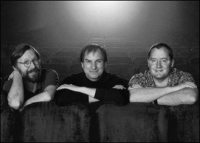

Ed Catmull, Steve Jobs, and John Lasseter, 1999
When Jobs was losing his footing at Apple in the summer of 1985, he went for a walk with Alan Kay, who had been at Xerox PARC and was then an Apple Fellow. Kay knew that Jobs was interested in the intersection of creativity and technology, so he suggested they go see a friend of his, Ed Catmull, who was running the computer division of George Lucas鈥檚 film studio. They rented a limo and rode up to Marin County to the edge of Lucas鈥檚 Skywalker Ranch, where Catmull and his little computer division were based. 鈥淚 was blown away, and I came back and tried to convince Sculley to buy it for Apple,鈥?Jobs recalled. 鈥淏ut the folks running Apple weren鈥檛 interested, and they were busy kicking me out anyway.鈥?/p>
1985骞村澶╋紝涔斿竷鏂湪鑻规灉鍏徃姝ｅ浜庡け鍔夸腑銆備竴澶╋紝浠栧拰鑹句鸡路鍑竴璧锋暎姝ワ紝鍑浘鍦ㄦ柦涔怭ARC宸ヤ綔锛屽綋鏃舵槸鑻规灉鍏徃鑱屽憳銆傚嚡鐭ラ亾锛屼箶甯冩柉瀵瑰垱鎰忎笌鎶€鏈殑浜よ瀺寰堟劅鍏磋叮锛屼簬鏄缓璁粬涓€鍚屾嫓璁胯嚜宸辩殑鏈嬪弸鍩冨痉路鍗＄壒绌嗗皵锛圗dCatmull锛夈€傚崱鐗圭﹩灏斿綋鏃舵槸涔旀不路鍗㈠崱鏂紙GeorgeLucas锛夌數褰卞埗鐗囧巶鐢佃剳閮ㄩ棬鐨勮礋璐ｄ汉銆備箶甯冩柉浠栦滑绉熶簡涓€杈嗚豹鍗庤娇杞︼紝椹捐溅鍓嶅線椹灄閮★紝鏉ュ埌鍗㈠崱鏂ぉ琛岃€呯墽鍦猴紙SkywalkerRanch锛夌殑杈逛笂锛屽崱鐗圭﹩灏斿強鍏剁數鑴戦儴闂ㄥ氨鍦ㄨ繖閲屻€傗€滄垜鎰熷埌寰堥渿鎾硷紝鍥炲叕鍙镐互鍚庡氨璇曞浘璇存湇鏂崱鍒╂妸瀹冩敹璐笅鏉ャ€傗€濅箶甯冩柉鍥炲繂閬擄紝鈥滀絾鏄鐞嗚嫻鏋滃叕鍙哥殑閭ｅ府瀹朵紮瀵规涓嶆劅鍏磋叮锛岃€屼笖浠栦滑姝ｅ繖鐫€鎶婃垜璧跺嚭鍘汇€傗€? 銆€銆€
The Lucasfilm computer division made hardware and software for rendering digital images, and it also had a group of computer animators making shorts, which was led by a talented cartoon-loving executive named John Lasseter. Lucas, who had completed his first Star Wars trilogy, was embroiled in a contentious divorce, and he needed to sell off the division. He told Catmull to find a buyer as soon as possible.
鍗㈠崱鏂奖涓氱數鑴戦儴闂ㄦ湁涓や釜涓昏缁勬垚閮ㄥ垎锛氫竴涓洟闃熺爺鍙戝畾鍒剁數鑴戯紝浣夸箣鑳藉灏嗗疄鏅數褰辫兌鐗囦笂鐨勫浘鍍忔暟瀛楀寲锛屽苟铻嶅叆閰风偒鐨勭壒鏁堬紱杩樻湁涓€涓數鑴戝姩鐢诲洟闃熷埗浣滃姩鐢荤煭鐗囷紝濡傘€婂畨寰风儓涓庢矁鍒╁巻闄╄銆嬶紙TheAdventuresofAndr茅andWallyB.锛夎繖閮ㄥ姩鐢荤墖鍦?984骞寸殑涓€娆¤涓氬ぇ浼氫笂灞曞嚭锛屼护鍏跺婕旂害缈奥锋媺濉炵壒锛圝ohnLasseter锛夊０鍚嶅ぇ鍣€傚崲鍗℃柉褰撴椂宸茬粡瀹屾垚浜嗕粬鐨勩€婃槦鐞冨ぇ鎴樸€嬶紙StarWars锛変笁閮ㄦ洸鐨勭涓€閮紝姝ｉ櫡鍏ヤ竴鍦轰簤鍚典笉鏂殑绂诲妗堜腑锛屼粬闇€瑕佸崠鎺夎繖涓數鑴戦儴闂ㄣ€傚崲鍗℃柉鍙崱鐗圭﹩灏斿敖蹇壘鍒颁拱瀹躲€?
After a few potential purchasers balked in the fall of 1985, Catmull and his colleague Alvy Ray Smith decided to seek investors so that they could buy the division themselves. So they called Jobs, arranged another meeting, and drove down to his Woodside house. After railing for a while about the perfidies and idiocies of Sculley, Jobs proposed that he buy their Lucasfilm division outright. Catmull and Smith demurred: They wanted an investor, not a new owner. But it soon became clear that there was a middle ground: Jobs could buy a majority of the division and serve as chairman but allow Catmull and Smith to run it.
1985骞寸锛屽湪涓€浜涙綔鍦ㄤ拱瀹堕兘閶宠簢涓嶅喅鏃讹紝鍗＄壒绌嗗皵鍜岃仈鍚堝垱濮嬩汉闃垮皵缁绰烽浄路鍙插瘑鏂紙AlvyRaySmith锛夊喅瀹氳嚜宸变拱涓嬭繖涓儴闂ㄥ苟瀵绘壘鎶曡祫鑰呫€備簬鏄紝浠栦滑鎵撶數璇濇壘鍒颁箶甯冩柉锛屽張瀹夋帓浜嗕竴娆′細闈紝涓や汉椹辫溅鍓嶅線涔斿竷鏂綅浜庝紞寰疯禌寰风殑瀹朵腑銆備箶甯冩柉鍏堟槸鎶辨€ㄤ簡涓€閫氭柉鍗″埄鐨勬剼锠㈠拰鑳屼俊寮冧箟锛岀劧鍚庢彁璁嚜宸卞叏璧勪拱涓嬪崲鍗℃柉褰变笟鐨勭數鑴戦儴闂ㄣ€傚崱鐗圭﹩灏斿拰鍙插瘑鏂嫆缁濅簡銆備粬浠兂瑕佷竴浣嶄富瑕佹姇璧勮€呰€屼笉鏄竴涓柊鐨勬墍鏈夎€呫€備笉杩囧緢蹇氨鏈変簡涓€涓姌涓姙娉曪細涔斿竷鏂嚭璧勮喘涔板鏁拌偂鏉冿紝骞舵媴浠昏懀浜嬮暱锛屼絾鐢卞崱鐗圭﹩灏斿拰鍙插瘑鏂潵杩愯惀銆?
鈥淚 wanted to buy it because I was really into computer graphics,鈥?Jobs recalled. 鈥淚 realized they were way ahead of others in combining art and technology, which is what I鈥檝e always been interested in.鈥?He offered to pay Lucas $5 million plus invest another $5 million to capitalize the division as a stand-alone company. That was far less than Lucas had been asking, but the timing was right. They decided to negotiate a deal.
鈥滄垜涔嬫墍浠ユ兂鏀惰喘杩欎釜閮ㄩ棬锛屾槸鍥犱负鎴戠湡鐨勫緢鍠滄璁＄畻鏈哄浘褰€傗€濅箶甯冩柉鍚庢潵鍥炲繂閬擄紝鈥滅湅鍒板崲鍗℃柉褰变笟鐢佃剳閮ㄩ棬杩欎簺浜虹殑鏃跺€欙紝鎴戞剰璇嗗埌锛屽湪铻嶅悎鑹烘湳涓庢妧鏈殑棰嗗煙锛屼粬浠蛋鍦ㄤ簡鍏朵粬浜哄墠闈紝鑰岃繖涓鍩熶竴鐩撮兘鏄垜鐨勫叴瓒ｆ墍鍦ㄣ€傗€濅箶甯冩柉鐭ラ亾锛屽湪鏈潵鏁板勾閲岋紝璁＄畻鏈哄皢浼氭瘮鐜板湪寮哄ぇ涓婄櫨鍊嶏紝浠栫浉淇¤繖浼氱粰鍔ㄧ敾鍜岄€肩湡鐨?D鍥惧舰甯︽潵宸ㄥぇ杩涙銆傗€滃崲鍗℃柉鍥㈤槦姝ｅ湪鐮旂┒鐨勯棶棰橀渶瑕侀潪甯稿己澶х殑璁＄畻澶勭悊鑳藉姏锛岃繖浣挎垜鎰忚瘑鍒颁粬浠繀灏嗗紩棰嗗巻鍙层€傛垜鍠滄杩欐牱鐨勫彂灞曟柟鍚戙€傗€?
The chief financial officer at Lucasfilm found Jobs arrogant and prickly, so when it came time to hold a meeting of all the players, he told Catmull, 鈥淲e have to establish the right pecking order.鈥?The plan was to gather everyone in a room with Jobs, and then the CFO would come in a few minutes late to establish that he was the person running the meeting. 鈥淏ut a funny thing happened,鈥?Catmull recalled. 鈥淪teve started the meeting on time without the CFO, and by the time the CFO walked in Steve was already in control of the meeting.鈥?/p>
涔斿竷鏂彁鍑虹殑鏉′欢鏄紝鍚戝崲鍗℃柉鏀粯500涓囩編鍏冿紝鐒跺悗鑷繁鍐嶆姇鍏?00涓囩編鍏冿紝浠庤€屽皢杩欎竴閮ㄩ棬鍙樻垚鐙珛鐨勫叕鍙搞€傝繖姣斿崲鍗℃柉涓€鐩翠互鏉ユ墍瑕佹眰鐨勯噾棰濅綆寰楀锛岀劧鑰屾椂鏈哄涔斿竷鏂潵璇村嵈鍒氬垰濂姐€備簬鏄紝鍙屾柟鍐冲畾閫氳繃璋堝垽杈炬垚浜ゆ槗銆傚崲鍗℃柉褰变笟鐨凜FO鍙戠幇涔斿竷鏂偛鎱㈠張鏄撴€掞紝鍦ㄨ皥鍒ゅ悇鏂瑰嵆灏嗕妇琛屼細璋堟椂锛岃繖浣岰FO瀵瑰崱鐗圭﹩灏旇锛氣€滄垜浠繀椤诲缓绔嬫纭殑绛夌骇娆″簭銆傗€濅粬鐨勮鍒掓槸锛屽皢鎵€鏈変汉鍜屼箶甯冩柉閮借仛闆嗗湪涓€闂翠細璁閲岋紝鐒跺悗杩欎綅CFO鏅氬埌鍑犲垎閽燂紝浠ヨ〃鏄庝粬鎵嶆槸涓绘寔浼氳鐨勪汉銆傗€滀絾鏄湁瓒ｇ殑浜嬫儏鍙戠敓浜嗭紝鈥濆崱鐗圭﹩灏斿洖蹇嗚锛屸€滃彶钂傚か鍦–FO缂哄腑鐨勬儏鍐典笅鎸夋椂寮€濮嬩簡杩欐浼氳锛岃€屽綋閭ｄ綅CFO璧拌繘鏉ユ椂锛屽彶钂傚か宸茬粡鎺屾彙浜嗕細璁殑鎺у埗鏉冦€傗€?
Jobs met only once with George Lucas, who warned him that the people in the division cared more about making animated movies than they did about making computers. 鈥淵ou know, these guys are hell-bent on animation,鈥?Lucas told him. Lucas later recalled, 鈥淚 did warn him that was basically Ed and John鈥檚 agenda. I think in his heart he bought the company because that was his agenda too.鈥?/p>
涔斿竷鏂彧瑙佽繃涔旀不路鍗㈠崱鏂竴闈紝鍗㈠崱鏂鍛婁粬璇达紝姣旇捣鍋氱數鑴戯紝杩欎釜閮ㄩ棬鐨勪汉鏇村叧蹇冨埗浣滃姩鐢荤數褰便€傗€滀綘鐭ラ亾锛岃繖浜涘浼欓兘鏄湪鎷煎懡鍋氬姩鐢汇€傗€濆崲鍗℃柉瀵逛箶甯冩柉璇淬€傚崲鍗℃柉鍚庢潵鍥炲繂琛ㄧず锛氣€滄垜纭疄璀﹀憡杩囦粬锛岃繖涓儴闂ㄥ熀鏈槸鎸夊焹寰峰拰绾︾堪鐨勮鍒掓潵寮€灞曞伐浣滅殑銆傛垜瑙夊緱鍦ㄤ粬鐪嬫潵锛屼拱涓嬭繖瀹跺叕鍙告槸鍥犱负瀹冧篃绗﹀悎浠栬嚜宸辩殑璁″垝銆傗€?
The final agreement was reached in January 1986. It provided that, for his $10 million investment, Jobs would own 70% of the company, with the rest of the stock distributed to Ed Catmull, Alvy Ray Smith, and the thirty-eight other founding employees, down to the receptionist. The division鈥檚 most important piece of hardware was called the Pixar Image Computer, and from it the new company took its name.
1986骞?鏈堬紝浠栦滑杈炬垚浜嗘渶缁堝崗璁€傚崗璁害瀹氾紝涔斿竷鏂姇璧?000涓囩編鍏冨悗锛屽彲鎸佹湁璇ュ叕鍙?0%鐨勮偂浠斤紝鍏朵粬鑲′唤鍒嗛厤缁欏焹寰仿峰崱鐗圭﹩灏斻€侀樋灏旂淮路闆仿峰彶瀵嗘柉鍙婂叾浠?8鍚嶅垱濮嬪憳宸ワ紝鍖呮嫭鍓嶅彴鎺ュ緟銆傝閮ㄩ棬鏈€閲嶈鐨勭‖浠舵槸鐨厠鏂浘鍍忕數鑴戯紙PixarImagesComputer锛夛紝鏂板叕鍙镐究浠ユ鍛藉悕銆傛渶鍚庣殑闂灏辨槸鍦ㄥ摢閲岀鍚堝悓锛屼箶甯冩柉鎯冲湪鑷繁浣嶄簬NeXT鐨勫姙鍏锛岃€屽崲鍗￠澇褰变笟鐨勪汉鎯冲湪澶╄鑰呯墽鍦恒€傛渶鍚庯紝鍙屾柟閮戒綔鍑轰簡濡ュ崗锛屽湪鏃ч噾灞变竴瀹跺緥甯堜簨鍔℃墍浼氶潰銆?
For a while Jobs let Catmull and Smith run Pixar without much interference. Every month or so they would gather for a board meeting, usually at NeXT headquarters, where Jobs would focus on the finances and strategy. Nevertheless, by dint of his personality and controlling instincts, Jobs was soon playing a stronger role. He spewed out a stream of ideas鈥攕ome reasonable, others wacky鈥攁bout what Pixar鈥檚 hardware and software could become. And on his occasional visits to the Pixar offices, he was an inspiring presence. 鈥淚 grew up a Southern Baptist, and we had revival meetings with mesmerizing but corrupt preachers,鈥?recounted Alvy Ray Smith. 鈥淪teve鈥檚 got it: the power of the tongue and the web of words that catches people up. We were aware of this when we had board meetings, so we developed signals鈥攏ose scratching or ear tugs鈥攆or when someone had been caught up in Steve鈥檚 distortion field and he needed to be tugged back to reality.鈥?/p>
鏈夐偅涔堜竴娈垫椂闂达紝涔斿竷鏂病鏈夎繘琛岃繃澶氬共棰勶紝璁╁崱鐗圭﹩灏斿拰鍙插瘑鏂嚜琛屾帉绠＄毊鍏嬫柉銆傛瘡闅斾竴涓湀宸﹀彸锛屼粬浠氨浼氳繘琛屼竴娆¤懀浜嬩細浼氳锛岄€氬父鏄湪NeXT鐨勬€婚儴锛屼箶甯冩柉涓昏鍏虫敞璐㈠姟鍜屾垬鐣ャ€傜劧鑰岋紝鐢变簬涓€т娇鐒朵互鍙婃帶鍒舵湰鑳界殑椹变娇锛屼箶甯冩柉寰堝揩灏卞彉鎴愪簡寮哄娍鐨勮鑹诧紝鏄剧劧姣斿崱鐗圭﹩灏斿拰鍙插瘑鏂鎯崇殑鏇翠负寮哄娍銆傞拡瀵圭毊鍏嬫柉鍏徃纭欢鍜岃蒋浠剁殑鏈潵锛屼粬鎻愬嚭浜嗕竴鍫嗘兂娉曪紝鏈夌殑鍚堢悊锛屾湁鐨勫彜鎬€傝€屼粬铏界劧鍙槸鍋跺皵鍓嶅線鐨厠鏂殑鍔炲叕瀹わ紝浣嗘瘡娆″嚭鐜颁粬閮借兘璁╀汉蹇冩疆婢庢箖銆傗€滄垜浠庡皬灏卞姞鍏ヤ簡缇庡崡娴镐俊浼氾紙SouthernBaptist锛夛紝鎴戜滑缁忓父鍚岄偅浜涚敓娲昏厫鍖栦絾鍗存瀬鍏疯泭鎯戝姏鐨勭墽甯堜滑涓€璧峰紑鍩圭伒浼氥€傗€濋樋灏旂淮路闆仿峰彶瀵嗘柉璇达紝鈥滃彶钂傚か鏄剧劧绮句簬姝ら亾锛屾繁鐭ュ彛鑸岀殑鍔涢噺鍜岃瑷€鐨勭綉缁滆兘璁╀汉闄疯繘鍘汇€傚紑钁ｄ簨浼氫細璁殑鏃跺€欙紝澶у鎰忚瘑鍒颁簡杩欎釜闂锛屼簬鏄垜浠彂灞曞嚭涓€濂椾俊鍙封€斺€旀姄鍑瓙鎴栨嫿鑰虫湹锛屽鏋滄湁浜洪櫡鍏ヤ簡鍙茶拏澶殑鐜板疄鎵洸鍔涘満锛岄渶瑕佽鎷夊洖鐜板疄锛屾垜浠氨浼氫娇鐢ㄨ繖涓俊鍙枫€傗€?
Jobs had always appreciated the virtue of integrating hardware and software, which is what Pixar did with its Image Computer and rendering software. It also produced creative content, such as animated films and graphics. All three elements benefited from Jobs鈥檚 combination of artistic creativity and technological geekiness. 鈥淪ilicon Valley folks don鈥檛 really respect Hollywood creative types, and the Hollywood folks think that tech folks are people you hire and never have to meet,鈥?Jobs later said. 鈥淧ixar was one place where both cultures were respected.鈥?/p>
涔斿竷鏂竴鐩撮兘寰堟璧忕‖浠跺拰杞欢鐨勬暣鍚堬紝鐨厠鏂殑鍥惧儚鐢佃剳鍜屾覆鏌撹蒋浠跺氨鏄姝ゃ€備簨瀹炰笂锛岀毊鍏嬫柉杩樻嫢鏈夊彟涓€涓绱狅細瀹冨埗浣滃嚭鑹茬殑鍐呭锛屽鍔ㄧ敾鐢靛奖鍜屽浘鍍忋€傝繖涓夌瑕佺礌閮藉緱鐩婁簬涔斿竷鏂皢鑹烘湳鍒涙剰鍜屾妧鏈殑缁撳悎銆傗€滅璋风殑浜哄苟涓嶅皧閲嶅ソ鑾卞潪鐨勫垱鎰忕壒璐紝鑰屽ソ鑾卞潪鐨勪汉鍒欒涓烘妧鏈汉鍛樻槸閭ｄ簺鍙渶闆囩敤鑰屾棤闇€瑙侀潰鐨勪汉銆傗€濅箶甯冩柉鍚庢潵璇撮亾锛屸€滅毊鍏嬫柉鍒欏悓鏃跺皧閲嶅ソ鑾遍笩鍜岀璋风殑鏂囧寲銆傗€?
Initially the revenue was supposed to come from the hardware side. The Pixar Image Computer sold for $125,000. The primary customers were animators and graphic designers, but the machine also soon found specialized markets in the medical industry (CAT scan data could be rendered in three-dimensional graphics) and intelligence fields (for rendering information from reconnaissance flights and satellites). Because of the sales to the National Security Agency, Jobs had to get a security clearance, which must have been fun for the FBI agent assigned to vet him. At one point, a Pixar executive recalled, Jobs was called by the investigator to go over the drug use questions, which he answered unabashedly. 鈥淭he last time I used that . . . ,鈥?he would say, or on occasion he would answer that no, he had actually never tried that particular drug.
鏈€鍒濓紝鐨厠鏂叕鍙稿笇鏈涚‖浠惰兘甯︽潵鏀跺叆銆傜毊鍏嬫柉鍥惧儚鐢佃剳鍞环12.5涓囩編鍏冿紝涓昏璐拱鑰呮槸鍔ㄧ敾甯堝拰骞抽潰璁捐甯堬紝涓嶈繃杩欐鐢佃剳涔熷湪鍖荤枟琛屼笟鍜屾儏鎶ラ鍩熸壘鍒颁簡鐗规畩甯傚満銆傦紙鍖荤枟CAT鎵弿鏁版嵁鑳藉琚浆鎹㈡垚涓夌淮鍥惧舰锛涙潵鑷睛瀵熼鏈哄拰鍗槦鐨勪俊鎭篃鑳介€氳繃璇ユ鐢佃剳杩涜杞崲銆傦級鐢变簬瑕侀攢鍞粰缇庡浗鍥藉瀹夊叏灞€锛屼箶甯冩柉蹇呴』鎺ュ彈瀹夊叏璋冩煡锛屽浜庤鎸囨淳鏉ヨ皟鏌ヤ粬鐨凢BI锛堢編鍥借仈閭﹁皟鏌ュ眬锛夌壒宸ユ潵璇翠竴瀹氭劅瑙夋湁瓒ｆ瀬浜嗐€傛嵁涓€浣嶇毊鍏嬫柉楂欑璁茶堪锛屾湁涓€娆★紝璋冩煡鍛樻墦鏉ョ數璇濊闂瘨鍝佷娇鐢ㄩ棶棰橈紝涔斿竷鏂瀹炲洖绛旓紝涓濇涓嶅姞鎺╅グ銆備粬浼氳鈥滄垜涓婂洖鐢ㄨ繖绉嶆瘨鍝佹槸鍦ㄢ€︹€︹€濓紝鍋跺皵浠栦篃浼氬洖绛斾笉锛屼粬浠庢湭鐢ㄨ繃閭ｇ姣掑搧銆?
Jobs pushed Pixar to build a lower-cost version of the computer that would sell for around $30,000. He insisted that Hartmut Esslinger design it, despite protests by Catmull and Smith about his fees. It ended up looking like the original Pixar Image Computer, which was a cube with a round dimple in the middle, but it had Esslinger鈥檚 signature thin grooves.
涔斿竷鏂姹傜毊鍏嬫柉寮€鍙戜竴娆炬垚鏈洿浣庣殑鍥惧儚鐢佃剳锛屽敭浠峰湪3涓囩編鍏冨乏鍙炽€備粬鍧氭寔鐢卞搱鐗圭﹩鐗孤疯壘鏂灄鏍艰繘琛岃璁★紝灏界鍗＄壒绌嗗皵鍜屽彶瀵嗘柉瀵瑰叾鏀惰垂浠锋牸琛ㄧず鍙嶅銆傛渶鍚庯紝杩欐鏂扮數鑴戣窡鐨厠鏂浘鍍忕數鑴戝緢鐩镐技锛屾槸涓€涓珛鏂逛綋锛屼腑闂存湁涓€澶勫渾褰㈠嚬闄凤紝浣嗗甫鏈夎壘鏂灄鏍兼嫑鐗屽紡鐨勭氦缁嗙汗璺€?
Jobs wanted to sell Pixar鈥檚 computers to a mass market, so he had the Pixar folks open up sales offices鈥攆or which he approved the design鈥攊n major cities, on the theory that creative people would soon come up with all sorts of ways to use the machine. 鈥淢y view is that people are creative animals and will figure out clever new ways to use tools that the inventor never imagined,鈥?he later said. 鈥淚 thought that would happen with the Pixar computer, just as it did with the Mac.鈥?But the machine never took hold with regular consumers. It cost too much, and there were not many software programs for it.
涔斿竷鏂兂瑕佹妸鐨厠鏂殑鐢佃剳鍗栫粰澶т紬甯傚満锛屼簬鏄粬璁╃毊鍏嬫柉鐨勪汉鍛樺湪鍚勫ぇ鍩庡競寮€杈熼攢鍞姙浜嬪锛屽姙浜嬪鐨勮璁＄敱浠栨湰浜哄鏍搁€氳繃銆備粬鐨勬兂娉曟槸锛屾湁鍒涙剰鐨勪汉寰堝揩浼氭兂鍒颁娇鐢ㄨ繖娆剧數鑴戠殑鍚勭鏂规硶銆傗€滄垜璁や负锛屼汉鏄垱閫犳€у姩鐗╋紝闈㈠宸ュ叿锛屼粬浠兘鎯冲嚭鍙戞槑鑰呮湭鏇炬兂杩囩殑鍚勭鑱槑鐨勪娇鐢ㄦ柟娉曪紝鈥濅箶甯冩柉鍚庢潵璇撮亾锛屸€滄垜瑙夊緱杩欎細鍚屾牱閫傜敤浜庣毊鍏嬫柉鐢佃剳锛屽氨鍍廙ac鈥旀牱銆傗€濅絾鏄紝鐨厠鏂數鑴戜粠鏈畬鍏ㄨ繘鍏ユ櫘閫氭秷璐硅€呭競鍦恒€傚畠浠敭浠峰お楂欙紝涓撻棬涓轰箣缂栧啓鐨勮蒋浠跺簲鐢ㄧ▼搴忎篃涓嶅銆?
On the software side, Pixar had a rendering program, known as Reyes (Renders everything you ever saw), for making 3-D graphics and images. After Jobs became chairman, the company created a new language and interface, named RenderMan, that it hoped would become a standard for 3-D graphics rendering, just as Adobe鈥檚 PostScript was for laser printing.
鍦ㄨ蒋浠舵柟闈紝鐨厠鏂湁涓€涓覆鏌撶▼搴忥紝鍚嶄负闆疯€舵柉锛圧eyes锛孯endersEverythingYouEverSaw锛夛紝鎰忎负娓叉煋浣犳墍瑙佺殑涓€鍒囷紝鐢ㄤ簬鍒朵綔3D鍥惧舰鍜屽浘鍍忋€備箶甯冩柉鎷呬换钁ｄ簨闀垮悗锛岀毊鍏嬫柉寮€鍙戜簡涓€绉嶆柊璇█鍜岀晫闈紝鍚嶄负RenderMan銆備粬浠湡鏈涜繖娆捐蒋浠惰兘澶熸垚涓?D鍥惧舰娓叉煋棰嗗煙鐨勬爣鍑嗭紝灏卞儚Adobe鍏徃鐨凱ostScript鈶犱箣浜庢縺鍏夋墦鍗伴偅鏍枫€?
As he had with the hardware, Jobs decided that they should try to find a mass market, rather than just a specialized one, for the software they made. He was never content to aim only at the corporate or high-end specialized markets. 鈥淗e would have these great visions of how RenderMan could be for everyman,鈥?recalled Pam Kerwin, Pixar鈥檚 marketing director. 鈥淗e kept coming up with ideas about how ordinary people would use it to make amazing 3-D graphics and photorealistic images.鈥?The Pixar team would try to dissuade him by saying that RenderMan was not as easy to use as, say, Excel or Adobe Illustrator. Then Jobs would go to a whiteboard and show them how to make it simpler and more user-friendly. 鈥淲e would be nodding our heads and getting excited and say, 鈥榊es, yes, this will be great!鈥欌€?Kerwin recalled. 鈥淎nd then he would leave and we would consider it for a moment and then say, 鈥榃hat the heck was he thinking!鈥?He was so weirdly charismatic that you almost had to get deprogrammed after you talked to him.鈥?As it turned out, average consumers were not craving expensive software that would let them render realistic images. RenderMan didn鈥檛 take off.
涔斿竷鏂涓猴紝鐨厠鏂殑杞欢涔熷簲璇ュ儚纭欢閭ｆ牱锛屽皾璇曡繘鍏ュぇ浼楀競鍦猴紝鑰屼笉鏄粎闄愪簬涓撲笟甯傚満銆傚彧閽堝浼佷笟甯傚満鎴栭珯绔笓涓氬競鍦虹殑鍋氭硶锛屼粬浠庢潵閮芥病鍏磋叮銆傗€滀粬闈炲父娌夎糠浜庡ぇ浼楀競鍦轰骇鍝侊紝鈥濆笗濮喡峰厠灏旀俯锛圥amKerwin锛夎锛屽ス鏄毊鍏嬫柉鐨勮惀閿€鎬荤洃锛屸€滀粬浼氭瀯閫犱竴浜涘畯澶х殑鎰挎櫙锛屾兂璞enderMan鑳藉鎬庢牱涓烘墍鏈変汉鏈嶅姟銆備粬鍦ㄤ細璁腑涓嶆柇浜х敓鏂版兂娉曪紝璁炬兂鏅€氱敤鎴峰皢濡備綍鐢ㄥ畠鍋氬嚭鎯婁汉鐨?D鍥惧舰鍜岄€肩湡鐨勫浘鍍忋€傗€濈毊鍏嬫柉鍥㈤槦璇曞浘鍔濋樆浠栵紝浠栦滑璁や负RenderMan骞朵笉鍍廍xcel鎴朅dobeIllustrator閭ｆ牱鏄撲簬浣跨敤銆傝繖鏃讹紝涔斿竷鏂氨浼氳蛋鍒颁竴鍧楃櫧鏉垮墠锛屽憡璇変粬浠浣曟妸瀹冨仛寰楁洿绠€鍗曪紝鏇翠究浜庝娇鐢ㄣ€傗€滄垜浠笉绂侀棰戠偣澶达紝鍏村鍦拌锛氣€樻槸鐨勶紝鏄殑锛岃繖鏍峰緢妫掞紒鈥欌€濆厠灏旀俯鍥炲繂璇达紝鈥滅瓑浠栬蛋浜嗕互鍚庯紝鎴戜滑鍙堣€冭檻浜嗕竴浼氬効锛岃寰椻€樹粬鎯崇殑閮芥槸浜涗粈涔堥涓绘剰锛佲€欎粬韬笂鐨勫鐗归瓍鍔涘疄鍦ㄦ槸寮哄ぇ锛屼綘鍜屼粬浜よ皥涔嬪悗灏卞嚑涔庤娲楄剳浜嗐€傗€濆悗鏉ヤ簨瀹炶瘉鏄庯紝鏅€氭秷璐硅€呭浜庤繖绉嶈兘璁╀粬浠覆鏌撳嚭閫肩湡鍥惧儚鐨勬槀璐佃蒋浠跺苟鏃犲叴瓒ｃ€俁enderMan娌℃湁鎴愬姛杩涘叆澶т紬甯傚満銆?
There was, however, one company that was eager to automate the rendering of animators鈥?drawings into color images for film. When Roy Disney led a board revolution at the company that his uncle Walt had founded, the new CEO, Michael Eisner, asked what role he wanted. Disney said that he would like to revive the company鈥檚 venerable but fading animation department. One of his first initiatives was to look at ways to computerize the process, and Pixar won the contract. It created a package of customized hardware and software known as CAPS, Computer Animation Production System. It was first used in 1988 for the final scene of The Little Mermaid, in which King Triton waves good-bye to Ariel. Disney bought dozens of Pixar Image Computers as CAPS became an integral part of its production.
涓嶈繃锛屽€掓槸鏈変竴瀹朵紒涓氭复鏈涘皢鍔ㄧ敾甯堢殑缁樼敾鑷姩娓叉煋鎴愬僵鑹插浘鍍忕敤浜庣數褰辨媿鎽勩€傜綏浼娐疯开澹凹锛圧oyDisney锛夊湪杩＋灏煎叕鍙稿彂鍔ㄤ簡涓€鍦鸿懀浜嬩細闈╁懡锛屼粬鏄鍏徃鍒涘浜烘矁灏旂壒路杩＋灏肩殑渚勫瓙銆傝开澹凹鍏徃鐨勬柊浠籆EO杩堝厠灏斅疯壘鏂撼锛圡ichaelEisner锛夐棶缃椾紛鎯宠鎷呬换浠€涔堣鑹诧紝缃椾紛琛ㄧず浠栨兂瑕侀噸鎸叕鍙稿巻鍙叉偁涔呭嵈鏃ユ笎琛拌惤鐨勫姩鐢婚儴闂ㄣ€備粬鐨勯杞妇鎺箣涓€灏辨槸璁炬硶灏嗗姩鐢绘祦绋嬭绠楁満鍖栵紝鑰岀毊鍏嬫柉璧㈠緱浜嗚开澹凹鐨勮繖浠藉悎鍚屻€傜毊鍏嬫柉涓鸿开澹凹閲忚韩瀹氬仛浜嗕竴娆捐蒋纭欢濂楄锛屽悕涓篊APS,鍗崇數鑴戝姩鐢诲埗浣滅郴缁燂紙ComputerAnimationProductionSystem锛夈€?988骞达紝杩欏璁惧棣栨鎶曞叆浣跨敤锛岃礋璐ｅ埗浣滃姩鐢荤墖銆婂皬缇庝汉楸笺€嬶紙TheLittleMermaid锛変腑鐨勬渶鍚庝竴骞曗€斺€斿浗鐜嬬壒閲屽悓鎸ュ埆鐖变附鍎裤€傚湪姝や箣鍚庯紝CAPS灏辨垚浜嗚开澹凹鏋佷负渚濊禆鐨勮澶囷紝杩＋灏间负姝ゅ張璐拱浜嗘暟鍗佸彴鐨厠鏂浘鍍忕數鑴戔€斺€?/p>
娉ㄩ噴锛?/p>
鈶燩ostScript鏄竴绉嶄富瑕佺敤浜庣數瀛愪骇涓氬拰妗岄潰鍑虹増棰嗗煙鐨勯〉闈㈡弿杩拌瑷€鍜岀紪绋嬭瑷€銆?/p>
The digital animation business at Pixar鈥攖he group that made little animated films鈥攚as originally just a sideline, its main purpose being to show off the hardware and software of the company. It was run by John Lasseter, a man whose childlike face and demeanor masked an artistic perfectionism that rivaled that of Jobs. Born in Hollywood, Lasseter grew up loving Saturday morning cartoon shows. In ninth grade, he wrote a report on the history of Disney Studios, and he decided then how he wished to spend his life.
鐨厠鏂殑鏁板瓧鍔ㄧ敾涓氬姟鈥斺€斿埗浣滃姩鐢荤煭鐗囩殑鍥㈤槦鈥斺€旀渶鍒濆彧鏄壇涓氾紝鍏朵富瑕佺洰鐨勬槸瀵瑰灞曠ず鑷繁鐨勭‖浠跺拰杞欢锛岀害缈奥锋媺濉炵壒璐熻矗杩欎釜鍥㈤槦鐨勮繍浣滐紝浠栨湁鐫€鍙埍鐨勮劯搴炲拰姘旇川锛屽浜庤壓鏈殑瀹岀編杩芥眰涓庝箶甯冩柉涓嶇浉涓婁笅銆傛媺濉炵壒鍑虹敓鍦ㄥソ鑾卞潪锛屼粠灏忓氨鍠滄瑙傜湅鍛ㄥ叚鏃╅棿鐨勫崱閫氳妭鐩€備節骞寸骇鏃讹紝璇诲畬璁拌堪杩＋灏煎伐浣滃鍘嗗彶鐨勩€婂姩鐢荤殑鑹烘湳銆嬶紙TheArtofAnimation锛夊悗锛屼粬鍐欎簡涓€浠借涔︽姤鍛婏紝閭ｆ椂鐨勪粬灏辨槑鐧戒簡鑷繁鎯宠鎬庢牱搴﹁繃涓€鐢熴€? 銆€銆€
When he graduated from high school, Lasseter enrolled in the animation program at the California Institute of the Arts, founded by Walt Disney. In his summers and spare time, he researched the Disney archives and worked as a guide on the Jungle Cruise ride at Disneyland. The latter experience taught him the value of timing and pacing in telling a story, an important but difficult concept to master when creating, frame by frame, animated footage. He won the Student Academy Award for the short he made in his junior year, Lady and the Lamp, which showed his debt to Disney films and foreshadowed his signature talent for infusing inanimate objects such as lamps with human personalities. After graduation he took the job for which he was destined: as an animator at Disney Studios.
楂欎腑姣曚笟鍚庯紝鎷夊鐗硅繘鍏ヤ簡鐢辨矁灏旂壒路杩＋灏煎垱鍔炵殑鍔犲窞鑹烘湳瀛﹂櫌锛圕aliforniaInstituteoftheArts锛?瀛︿範鍔ㄧ敾涓撲笟銆傛殤鍋囧拰璇句綑鏃堕棿锛屼粬鐮旂┒杩＋灏肩殑妗ｆ鏂囦欢锛岃繕鍦ㄨ开澹凹涔愬洯鐨勪笡鏋楀贰鑸父涔愰」鐩仛瀵兼父銆傝开澹凹涔愬洯鐨勫娓哥粡鍘嗚浠栨噦寰椾簡鎶婃彙鏃堕棿鍜岃妭濂忓浜庤鏁呬簨鐨勯噸瑕佹€э紝鍦ㄥ垱浣滀竴甯т竴甯х殑鍔ㄧ敾鏃讹紝鎺屾彙杩欎竴姒傚康寰堥噸瑕佷絾涔熺粷闈炴槗浜嬨€傛媺濉炵壒澶у涓夊勾绾ф椂鎷嶆憚鐨勭煭鐗囥€婂皬濮愪笌鍙扮伅銆嬶紙LadyandtheLamp锛変负浠栬耽寰椾簡瀛︾敓濂ユ柉鍗″锛圫tudentAcademyAward锛夈€傝繖閮ㄧ煭鐗囧€熼壌浜嗐€婂皬濮愪笌娴佹氮姹夈€嬶紙LadyandtheTramp锛夌瓑杩＋灏肩數褰憋紝涔熷睍闇插嚭浠栫殑鎯婁汉澶╂墠鈥斺€旇祴浜堟棤鐢熷懡鐨勪笢瑗夸互浜虹殑涓€с€傛瘯涓氬悗锛屼粬寰楀埌浜嗕竴浠芥敞瀹氳浠庝簨鐨勫伐浣溾€斺€斿湪杩＋灏煎埗鐗囧巶锛圖isneyStudio锛夊仛鍔ㄧ敾甯堛€?
Except it didn鈥檛 work out. 鈥淪ome of us younger guys wanted to bring Star Wars鈥搇evel quality to the art of animation, but we were held in check,鈥?Lasseter recalled. 鈥淚 got disillusioned, then I got caught in a feud between two bosses, and the head animation guy fired me.鈥?So in 1984 Ed Catmull and Alvy Ray Smith were able to recruit him to work where Star Wars鈥搇evel quality was being defined, Lucasfilm. It was not certain that George Lucas, already worried about the cost of his computer division, would really approve of hiring a full-time animator, so Lasseter was given the title 鈥渋nterface designer.鈥?/p>
浣嗘槸鎷夊鐗瑰湪杩＋灏肩殑宸ヤ綔骞朵笉椤哄績銆傗€滄垜浠竴浜涘勾杞讳汉鎯宠缁欏姩鐢昏壓鏈甫鏉ャ€婃槦鐞冨ぇ鎴樸€嬬殑姘村噯锛屼絾鍗村彈鍒颁簡绾︽潫銆傗€濇媺濉炵壒鍥炲繂璇达紝鈥滄垜鐨勫够鎯崇牬鐏簡锛屽悗鏉ュ嵎鍏ヤ簡涓や釜涓婂徃涔嬮棿鐨勬枟娉曪紝鍔ㄧ敾閮ㄩ棬鐨勫ご鍎胯В闆囦簡鎴戙€傗€?984骞达紝鍩冨痉路鍗＄壒绌嗗皵鍜岄樋灏旂淮路闆仿峰彶瀵嗘柉鑱樿浜嗘媺濉炵壒锛岃€屻€婃槦鐞冨ぇ鎴樸€嬬殑姘村噯姝ｆ槸鍑鸿嚜鍗㈠崱鏂奖涓氥€傚綋鏃讹紝涔旀不路鍗㈠崱鏂氨宸茬粡鍦ㄦ媴蹇х數鑴戦儴闂ㄧ殑鎴愭湰浜嗭紝浠栦滑鎷夸笉鍑嗗崲鍗℃柉鏄惁浼氬悓鎰忛泧鐢ㄤ竴浣嶅叏鑱屽姩鐢诲笀锛屽洜鑰屾媺濉炵壒鐨勮亴浣嶆槸鈥滅晫闈㈣璁″笀鈥濄€?
After Jobs came onto the scene, he and Lasseter began to share their passion for graphic design. 鈥淚 was the only guy at Pixar who was an artist, so I bonded with Steve over his design sense,鈥?Lasseter said. He was a gregarious, playful, and huggable man who wore flowery Hawaiian shirts, kept his office cluttered with vintage toys, and loved cheeseburgers. Jobs was a prickly, whip-thin vegetarian who favored austere and uncluttered surroundings. But they were actually well-suited for each other. Lasseter was an artist, so Jobs treated him deferentially, and Lasseter viewed Jobs, correctly, as a patron who could appreciate artistry and knew how it could be interwoven with technology and commerce.
涔斿竷鏂叆涓诲叕鍙稿悗锛屾媺濉炵壒鍜屼粬寮€濮嬪垎浜郊姝ゅ浜庡浘褰㈣璁＄殑婵€鎯呫€傗€滄垜鍦ㄧ毊鍏嬫柉鏄敮涓€涓€涓壓鏈锛屽洜姝ゅ拰鍙茶拏澶湪璁捐鎰熻涓婃湁寰堝ぇ鍏遍福銆傗€濇媺濉炵壒璇撮亾銆備粬鍚堢兢锛屽ソ鐜╋紝璁ㄤ汉鍠滄锛岀埍绌胯姳鍝ㄧ殑澶忓▉澶疯～锛屽姙鍏閲屽爢婊″彜钁ｇ帺鍏凤紝鍠滄鍚冭姖澹眽鍫″寘銆備箶甯冩柉鏄撴€掞紝鏄釜韬舰鐥╁墛鐨勭礌椋熶富涔夎€咃紝鍠滄绠€鏈存暣娲佺殑鐜銆備絾浠栦滑绔熺劧闈炲父濂戝悎銆傛媺濉炵壒鏄釜鑹烘湳瀹讹紝鑰岃壓鏈鍦ㄤ箶甯冩柉鐪奸噷涓嶆槸鑻遍泟灏辨槸绗ㄨ泲锛屾媺濉炵壒鍦ㄤ粬鐪奸噷鏄剧劧灞炰簬鑻遍泟閭ｄ竴绫汇€備箶甯冩柉瀵逛粬鎭暚鏈夊姞锛岀湡蹇冮挦浣╀粬鐨勬墠鍗庛€傛媺濉炵壒鍒欑悊鏅哄湴灏嗕箶甯冩柉瑙嗗仛璧炲姪浜衡€斺€旇兘澶熸璧忚壓鏈伐浣滃苟涓旂煡閬撳浣曞皢鍏朵笌鎶€鏈拰鍟嗕笟杩涜铻嶅悎銆?
Jobs and Catmull decided that, in order to show off their hardware and software, Lasseter should produce another short animated film in 1986 for SIGGRAPH, the annual computer graphics conference. At the time, Lasseter was using the Luxo lamp on his desk as a model for graphic rendering, and he decided to turn Luxo into a lifelike character. A friend鈥檚 young child inspired him to add Luxo Jr., and he showed a few test frames to another animator, who urged him to make sure he told a story. Lasseter said he was making only a short, but the animator reminded him that a story can be told even in a few seconds. Lasseter took the lesson to heart. Luxo Jr. ended up being just over two minutes; it told the tale of a parent lamp and a child lamp pushing a ball back and forth until the ball bursts, to the child鈥檚 dismay.
涔斿竷鏂拰鍗＄壒绌嗗皵鍐冲畾锛屼负浜嗗睍绀虹毊鍏嬫柉鐨勭‖浠跺拰杞欢锛屽簲璇ヨ鎷夊鐗硅嫆鍒朵綔涓€閮ㄥ姩鐢荤煭鐗囷紝鍙傚姞1986骞寸殑SIGGRAPH锛堢編鍥借绠楁満鍗忎細璁＄畻鏈虹粯鍥句笓涓氱粍澶т細锛夈€傝繖鏄绠楁満鍥惧舰瀛︾晫鐨勫勾搴︿細璁紝涓ゅ勾鍓嶏紝銆婂畨寰风儓涓庢矁鍒╁巻闄╄銆嬪氨鍦ㄨ繖涓€浼氳涓婂紩鍙戜簡杞板姩銆傛媺濉炵壒鐨勫姙鍏涓婃斁鐫€涓€鐩廘uxo鍙扮伅锛屼粬鎶婅繖鐩忓彴鐏敤鍋氬浘褰㈡覆鏌撶殑妯″瀷锛屽苟鍐冲畾鎶奓uxo鍙樻垚涓€涓牘鏍╁鐢熺殑鍔ㄧ敾瑙掕壊銆備竴浣嶆湅鍙嬬殑灏忓缁欎簡浠栫伒鎰燂紝鎷夊鐗瑰張鍦ㄦ晠浜嬩腑娣诲姞浜嗕竴涓皬鍙扮伅锛圠uxoJr.锛夌殑瑙掕壊銆傛媺濉炵壒鍚戝彟涓€浣嶅姩鐢诲笀灞曠ず涓€浜涙祴璇曞抚鏃讹紝瀵规柟鍔涘姖浠栫敤杩欎袱涓鑹茶涓€涓晠浜嬨€傛媺濉炵壒琛ㄧず锛岃嚜宸卞彧鏄湪鍋氫竴閮ㄧ煭鐗囷紝浣嗛偅浣嶅姩鐢诲笀鎻愰啋浠栬锛屽嵆渚垮嚑绉掗挓涔熻兘璁茶堪涓€涓晠浜嬨€傛媺濉炵壒灏嗚繖涓憡璇摥璁颁簬蹇冦€傘€婇〗鐨烦璺崇伅銆嬶紙LuxoJr.锛夋渶鍚庣殑鎴愮墖鍙湁涓ゅ垎澶氶挓锛屼絾鏄畠璁茶堪浜嗕竴涓晠浜嬧€斺€斿彴鐏埜鐖稿拰鍙扮伅瀛╁瓙鎶婁竴涓悆鎺ㄦ潵鎺ㄥ幓锛屽悗鏉ョ悆鐖嗕簡锛屽皬鍙扮伅寰堜激蹇冦€?
Jobs was so excited that he took time off from the pressures at NeXT to fly down with Lasseter to SIGGRAPH, which was being held in Dallas that August. 鈥淚t was so hot and muggy that when we鈥檇 walk outside the air hit us like a tennis racket,鈥?Lasseter recalled. There were ten thousand people at the trade show, and Jobs loved it. Artistic creativity energized him, especially when it was connected to technology.
涔斿竷鏂潪甯告縺鍔紝鐗规剰浠嶯eXT鍏徃鍘嬪姏閲嶉噸鐨勫伐浣滀腑鎶借韩锛屽拰鎷夊鐗归璧碨IGGRAPH澶т細銆傝繖涓€骞寸殑澶т細浜?鏈堝湪杈炬媺鏂妇琛屻€傗€滃ぉ姘斿お鐑お闂凤紝鎴戜滑涓€璧板嚭鍘伙紝灏辫寰楃儹姘斿儚缃戠悆鎷嶄竴鏍疯繋闈㈡尌浜嗚繃鏉ャ€傗€濇媺濉炵壒鍥炲繂璇淬€傚睍浼氬叡鏈変竴涓囦汉鍙傚姞锛屻€佷竴鍒囬兘璁╀箶甯冩柉寰堝枩娆€傝壓鏈垱浣滄縺鍔辩潃浠栵紝灏ゅ叾鏄綋瀹冧笌绉戞妧鐩歌瀺鍚堟椂銆?
There was a long line to get into the auditorium where the films were being screened, so Jobs, not one to wait his turn, fast-talked their way in first. Luxo Jr. got a prolonged standing ovation and was named the best film. 鈥淥h, wow!鈥?Jobs exclaimed at the end. 鈥淚 really get this, I get what it鈥檚 all about.鈥?As he later explained, 鈥淥ur film was the only one that had art to it, not just good technology. Pixar was about making that combination, just as the Macintosh had been.鈥?/p>
鐢靛奖鏀炬槧绀煎爞闂ㄥ彛鎺掍簡闀块暱鐨勯槦锛屼箶甯冩柉涓嶆槸閭ｇ浼氫箹涔栫瓑鐫€杩涘満鐨勪汉锛屼粬涓夎█涓よ灏辫鏈嶄簡璐熻矗浜鸿浠栦滑鍏堣繘鍘汇€傘€婇〗鐨烦璺崇伅銆嬭耽寰椾簡瑙備紬闀挎椂闂寸殑璧风珛榧撴帉锛屽苟琚瘎涓烘渶浣冲奖鐗囥€傗€滃摝锛岀湱锛佲€濅箶甯冩柉鍦ㄧ粨鏉熸椂娆㈠懠閬撱€傗€滄垜鐪熺殑鎳備簡锛屾垜鎳備簡浠€涔堟槸鏈€閲嶈鐨勩€傗€濇濡備粬鍚庢潵瑙ｉ噴鐨勶紝鈥滄垜浠殑鐢靛奖涓嶄粎浠呮嫢鏈夊ソ鎶€鏈紝鑰屼笖鏄敮涓€鏈夎壓鏈唴娑电殑銆傜毊鍏嬫柉鏄湪铻嶅悎鑹烘湳涓庣鎶€锛屽氨鍍忛害閲戝鏇剧粡鎵€鍋氱殑閭ｆ牱銆傗€?
Luxo Jr. was nominated for an Academy Award, and Jobs flew down to Los Angeles to be there for the ceremony. It didn鈥檛 win, but Jobs became committed to making new animated shorts each year, even though there was not much of a business rationale for doing so. As times got tough at Pixar, he would sit through brutal budget-cutting meetings showing no mercy. Then Lasseter would ask that the money they had just saved be used for his next film, and Jobs would agree.
銆婇〗鐨烦璺崇伅銆嬭幏寰椾簡濂ユ柉鍗℃彁鍚嶏紝涔斿竷鏂鍘绘礇鏉夌煻鍙傚姞棰佸鍏哥ぜ銆傛渶缁堣鐭墖娌¤兘鑾峰锛屼絾鏄箶甯冩柉浠庢鍐冲績姣忓勾閮藉埗浣滀竴閮ㄦ柊鐨勫姩鐢荤煭鐗囷紝灏界杩欎釜鍐冲畾骞舵病鏈夊お澶氬晢涓氫笂鐨勭悊鐢便€傞殢鐫€鐨厠鏂澧冭壈闅撅紝涔斿竷鏂潥鎸佹畫閰峰湴鍓婂噺棰勭畻锛屾涓嶆墜杞€傝€屽綋鎷夊鐗硅姹傚皢鍒氬垰鐪佷笅鐨勯挶鎷挎潵鍋氫笅涓€閮ㄧ數褰辨椂锛屼箶甯冩柉鍗村悓鎰忎簡銆?
Not all of Jobs鈥檚 relationships at Pixar were as good. His worst clash came with Catmull鈥檚 cofounder, Alvy Ray Smith. From a Baptist background in rural north Texas, Smith became a free-spirited hippie computer imaging engineer with a big build, big laugh, and big personality鈥攁nd occasionally an ego to match. 鈥淎lvy just glows, with a high color, friendly laugh, and a whole bunch of groupies at conferences,鈥?said Pam Kerwin. 鈥淎 personality like Alvy鈥檚 was likely to ruffle Steve. They are both visionaries and high energy and high ego. Alvy is not as willing to make peace and overlook things as Ed was.鈥?/p>
涔斿竷鏂湪鐨厠鏂殑浜洪檯鍏崇郴骞堕潪閮借繖涔堝ソ銆傛渶涓ラ噸鐨勪竴娆″啿绐佹槸鍚岄樋灏旂淮路闆仿峰彶瀵嗘柉鈥斺€斿崱鐗圭﹩灏旂殑鑱斿悎鍒涘浜恒€傚彶瀵嗘柉鏉ヨ嚜寰楀厠钀ㄦ柉宸炲寳閮ㄥ啘鏉戯紝鍦ㄦ蹈淇′細鐨勭啅闄朵笅闀垮ぇ锛屾槸涓€涓嫢鏈夎嚜鐢辩簿绁炵殑瀣夌毊澹紝鎷呬换鐢佃剳鍥惧儚宸ョ▼甯堛€備粬韬潗楂樺ぇ锛岀瑧澹扮埥鏈楋紝寰堟湁涓€э紝鏈夋椂涔熷緢鑷礋銆傗€滈樋灏旂淮鍏夎姃鍥涘皠锛岀瑧瀹瑰弸鍠勶紝鍦ㄤ細璁腑鏈変竴澶у爢鎷ユ姢鑰呫€傗€濆笗濮喡峰厠灏旀俯璇撮亾锛屸€滈樋灏旂淮杩欐牱鐨勪釜鎬у彲鑳戒細瑙︽€掑彶钂傚か銆備粬浠兘鏄湁杩滆鐨勪汉锛岀簿鍔涙椇鐩涳紝闈炲父鑷礋銆傞樋灏旂淮涓嶆効鎰忓儚鍩冨痉涓€鏍锋伅浜嬪畞浜猴紝鏃犺涓€浜涗笉楂樺叴鐨勪簨銆傗€? 銆€銆€
Smith saw Jobs as someone whose charisma and ego led him to abuse power. 鈥淗e was like a televangelist,鈥?Smith said. 鈥淗e wanted to control people, but I would not be a slave to him, which is why we clashed. Ed was much more able to go with the flow.鈥?Jobs would sometimes assert his dominance at a meeting by saying something outrageous or untrue. Smith took great joy in calling him on it, and he would do so with a large laugh and a smirk. This did not endear him to Jobs.
鍙插瘑鏂涓猴紝涔斿竷鏂殑棰嗚榄呭姏鍜岃嚜璐熻嚧浣夸粬婊ョ敤鏉冨姏銆傗€滀粬灏卞儚涓€涓數瑙嗚妭鐩腑鐨勫竷閬撹€呭彶瀵嗘柉琛ㄧず锛屸€滀粬瑕佹帶鍒跺埆浜猴紝浣嗘槸鎴戜笉鎰挎剰鍋氫粬鐨勫ゴ闅讹紝鍥犳鎴戜滑鍙戠敓浜嗗啿绐併€傝€屽焹寰锋洿鎰挎剰椤哄叾鑷劧銆傗€濆紑浼氭椂锛屼箶甯冩柉鏈夋椂浼氳涓€浜涚璋辨垨涓嶇湡瀹炵殑涓滆タ鏉ョ‘绔嬭嚜宸辩殑涓诲鍦颁綅銆傚彶瀵嗘柉鍠滄鍦ㄨ繖绉嶆儏鍐典笅鍜屼箶甯冩柉鍙澘锛屼粬浼氳竟绗戣竟璇达紝鏈€鍚庨湶鍑哄緱鎰忕殑绗戝銆傝繖璁╀箶甯冩柉鎰熷埌寰堜笉鐖姐€?
One day at a board meeting, Jobs started berating Smith and other top Pixar executives for the delay in getting the circuit boards completed for the new version of the Pixar Image Computer. At the time, NeXT was also very late in completing its own computer boards, and Smith pointed that out: 鈥淗ey, you鈥檙e even later with your NeXT boards, so quit jumping on us.鈥?Jobs went ballistic, or in Smith鈥檚 phrase, 鈥渢otally nonlinear.鈥?When Smith was feeling attacked or confrontational, he tended to lapse into his southwestern accent. Jobs started parodying it in his sarcastic style. 鈥淚t was a bully tactic, and I exploded with everything I had,鈥? Smith recalled. 鈥淏efore I knew it, we were in each other鈥檚 faces鈥攁bout three inches apart鈥攕creaming at each other.鈥?/p>
鏈変竴娆¤懀浜嬩細浼氳涓婏紝鍥犱负鏂扮増鐨厠鏂浘鍍忕數鑴戠殑鐢佃矾鏉块伃閬囧欢鏈燂紝涔斿竷鏂紑濮嬭鏂ュ彶瀵嗘柉鍜岀毊鍏嬫柉鐨勫叾浠栭珯绠°€傚綋鏃讹紝NeXT鐢佃剳鐨勭數璺澘涔熸帹杩熶簡寰堜箙銆傚彶瀵嗘柉鎸囧嚭浜嗚繖涓€鐐癸細鈥滃樋锛屼綘浠殑NeXT鐢佃矾鏉挎洿杩熷憿锛屾墍浠ュ埆瀵规垜浠ぇ鍛煎皬鍙簡銆傗€濅箶甯冩柉椤挎椂澶у彂闆烽渾锛屾垨鑰呯敤鍙插瘑鏂殑璇濇潵璇粹€滃畬鍏ㄤ笉鍙悊鍠烩€濄€傚綋鍙插瘑鏂寰楄鏀诲嚮鎴栭伃閬囧鎶楁椂锛屼細涓嶇敱鑷富鍦板啋鍑鸿タ鍗楅儴鍙ｉ煶銆備箶甯冩柉浜庢槸鎸栬嫤鐫€妯′豢鍙插瘑鏂€傗€滆繖绠€鐩村氨鏄璐熶汉锛屾垜瀹屽叏鐖嗗彂浜嗐€傗€濆彶瀵嗘柉鍥炲繂閬擄紝鈥滄垜杩樻病鍙嶅簲杩囨潵锛屾垜浠咯灏卞凡缁忛潰瀵归潰浜嗭紝鐩搁殧鍙湁3鑻卞锛屾湞鐫€瀵规柟澶у惣銆傗€?
Jobs was very possessive about control of the whiteboard during a meeting, so the burly Smith pushed past him and started writing on it. 鈥淵ou can鈥檛 do that!鈥?Jobs shouted.
涔斿竷鏂浜庝細璁腑鐨勭櫧鏉挎瀬鍏锋帶鍒舵锛屼簬鏄瓉姊х殑鍙插瘑鏂帹寮€浠栵紝寮€濮嬪湪鐧芥澘涓婂啓鍐欑敾鐢汇€傗€滀綘涓嶈兘杩欐牱锛佲€濅箶甯冩柉澶у枈銆?
鈥淲hat?鈥?responded Smith, 鈥淚 can鈥檛 write on your whiteboard? Bullshit.鈥?At that point Jobs stormed out.
鈥滀粈涔堬紵鈥濆彶瀵嗘柉鍥炲嚮閬擄紝鈥滄垜涓嶈兘鍦ㄤ綘鐨勭櫧鏉夸笂鍐欏瓧锛熸斁鐙楀眮锛佲€濆惉鍒拌繖璇濓紝涔斿竷鏂憯闂ㄨ€屽嚭銆?
Smith eventually resigned to form a new company to make software for digital drawing and image editing. Jobs refused him permission to use some code he had created while at Pixar, which further inflamed their enmity. 鈥淎lvy eventually got what he needed,鈥?said Catmull, 鈥渂ut he was very stressed for a year and developed a lung infection.鈥?In the end it worked out well enough; Microsoft eventually bought Smith鈥檚 company, giving him the distinction of being a founder of one company that was sold to Jobs and another that was sold to Gates.
鍙插瘑鏂渶缁堣緸浜嗚亴锛屾垚绔嬩簡涓€瀹舵柊鍏徃锛屽埗浣滄暟瀛楃粯鍥惧拰鍥惧儚缂栬緫杞欢銆備箶甯冩柉鎷掔粷鍙插瘑鏂娇鐢ㄤ粬鍦ㄧ毊鍏嬫柉鏃剁紪鍐欑殑浠ｇ爜锛岃繖鍙堣繘涓€姝ュ姞娣变簡褰兼鐨勬晫鎰忋€傗€滈樋灏旂淮鏈€缁堝緱鍒颁簡浠栭渶瑕佺殑涓滆タ锛屸€濆崱鐗圭﹩灏旇锛屸€滀絾鏄紝浠栬繖涓€骞寸殑鍘嬪姏閮藉緢澶э紝鍧偅涓婁簡鑲洪儴鎰熸煋銆傗€濇渶鍚庯紝缁撴灉杩樼畻涓嶉敊锛屽井杞敹璐簡鍙插瘑鏂殑鏂板叕鍙搞€傝嚜宸辨垚绔嬬殑鍏徃锛屼竴瀹跺崠缁欎箶甯冩柉锛屽彟涓€瀹跺崠缁欑洊鑼紝杩欐牱鐨勪汉涔熷彧鏈夊彶瀵嗘柉浜嗗惂銆?
Ornery in the best of times, Jobs became particularly so when it became clear that all three Pixar endeavors鈥攈ardware, software, and animated content鈥攚ere losing money. 鈥淚鈥檇 get these plans, and in the end I kept having to put in more money,鈥?he recalled. He would rail, but then write the check. Having been ousted at Apple and flailing at NeXT, he couldn鈥檛 afford a third strike.
涓嶈繃锛屽嵆渚垮湪澧冨喌鏈€濂界殑鏃跺€欙紝涔斿竷鏂殑鑴炬皵涔熷緢鏆磋簛銆傚洜姝わ紝褰撶毊鍏嬫柉鐨勪笁椤瑰姫鍔涒€斺€旂‖浠躲€佽蒋浠跺拰鍔ㄧ敾鍐呭鈥斺€旈兘鍦ㄨ禂閽辨椂锛屼箶甯冩柉灏辫秺鍙戝姝や簡銆傗€滄垜鍒惰浜嗚繖浜涜鍒掞紝缁撴灉鍗村緱涓嶅仠鍦版姇閽辫繘鍘汇€傗€濅粬鍥炲繂璇淬€備粬浼氳矗楠傜毊鍏嬫柉鐨勪汉锛屼絾杩樻槸浼氱粰浠栦滑寮€鏀エ銆傚凡缁忚鑻规灉椹遍€愶紝鍙堣鍥板湪NeXT锛屼粬涓嶈兘鎺ュ彈鍐嶄竴娆℃墦鍑讳簡銆?
To stem the losses, he ordered a round of deep layoffs, which he executed with his typical empathy deficiency. As Pam Kerwin put it, he had 鈥渘either the emotional nor financial runway to be decent to people he was letting go.鈥?Jobs insisted that the firings be done immediately, with no severance pay. Kerwin took Jobs on a walk around the parking lot and begged that the employees be given at least two weeks notice. 鈥淥kay,鈥?he shot back, 鈥渂ut the notice is retroactive from two weeks ago.鈥?Catmull was in Moscow, and Kerwin put in frantic calls to him. When he returned, he was able to institute a meager severance plan and calm things down just a bit.
涓轰簡姝㈡崯锛屼箶甯冩柉涓嬩护杩涜涓€杞ぇ瑙勬ā瑁佸憳銆備粬缂轰箯瀵瑰緟浠栦汉鐨勫悓鎯呭績锛屽喎閰峰湴鎵ц浜嗚繖涓€鍐冲畾銆傛濡傚笗濮喡峰厠灏旀俯鎵€褰㈠鐨勶細鈥滃浜庤瑙ｉ泧鐨勪汉锛屼粬鍦ㄦ劅鎯呭拰璐㈠姟涓婇兘涓嶇暀浣欏湴銆傗€濅箶甯冩柉鍧氭寔瑁佸憳绔嬪嵆寮€濮嬶紝涓斾笉鏀粯閬ｆ暎璐广€傚厠灏旀俯鎷界潃涔斿竷鏂湪鍋滆溅鍦哄懆鍥存暎姝ワ紝璇锋眰浠栬嚦灏戞彁鍓嶄袱鍛ㄥ憡鐭ュ憳宸ヤ滑杩欎竴娑堟伅銆傗€滃ソ鍚э紝鈥濅箶甯冩柉鍥炵瓟閬擄紝鈥滀絾閫氱煡搴旇鍊掓帹鍥炰袱鍛ㄧ敓鏁堛€傗€濆崱鐗圭﹩灏斿綋鏃跺湪鑾柉绉戯紝鍏嬪皵娓╃柉浜嗕技鐨勮窡浠栨墦鐢佃瘽銆傚崱鐗圭﹩灏斿洖鏉ュ悗锛岀爺绌跺嚭涓€涓仯鏁ｈ鍒掞紝缁欎簣琚В闆囧憳宸ュ井钖勭殑琛ュ伩锛岀◢寰钩鎭簡浜嬫€併€?
At one point the members of the Pixar animation team were trying to convince Intel to let them make some of its commercials, and Jobs became impatient. During a meeting, in the midst of berating an Intel marketing director, he picked up the phone and called CEO Andy Grove directly. Grove, still playing mentor, tried to teach Jobs a lesson: He supported his Intel manager. 鈥淚 stuck by my employee,鈥?he recalled. 鈥淪teve doesn鈥檛 like to be treated like a supplier.鈥?/p>
鐨厠鏂姩鐢诲洟闃熸浘涓€搴﹁瘯鍥捐鏈嶈嫳鐗瑰皵鍏徃锛屽笇鏈涙壙鎺ュ鏂圭殑閮ㄥ垎鍟嗕笟骞垮憡鍒朵綔涓氬姟銆傜劧鑰岋紝涔斿竷鏂病鏈変竴鐐瑰効鑰愭€с€備竴娆′細璁笂锛屼箶甯冩柉姝ｇ棝鏂ヨ嫳鐗瑰皵鐨勮惀閿€鎬荤洃锛岃鍒颁竴鍗婂張鎷胯捣鐢佃瘽锛岀洿鎺ユ墦缁欒嫳鐗瑰皵鐨凜EO瀹夎开路鏍奸瞾澶€傛牸椴佸か鍦ㄦ煇绉嶇▼搴︿笂浠嶇劧绠楁槸涔斿竷鏂殑鑰佸笀锛屼粬鎯宠缁欎箶甯冩柉涓婁竴璇撅紝浠栨敮鎸佽嫳鐗瑰皵鍏徃鐨勭粡鐞嗐€傗€滄垜鏀寔鑷繁鐨勫憳宸ワ紝鈥濅粬鍥炲繂閬擄紝鈥滃彶钂傚か涓嶅枩娆㈣褰撳仛渚涘簲鍟嗘潵瀵瑰緟銆傗€?
Grove also played mentor when Jobs proposed that Pixar give Intel suggestions on how to improve the capacity of its processors to render 3-D graphics. When the engineers at Intel accepted the offer, Jobs sent an email back saying Pixar would need to be paid for its advice. Intel鈥檚 chief engineer replied, 鈥淲e have not entered into any financial arrangement in exchange for good ideas for our microprocessors in the past and have no intention for the future.鈥?Jobs forwarded the answer to Grove, saying that he found the engineer鈥檚 response to be 鈥渆xtremely arrogant, given Intel鈥檚 dismal showing in understanding computer graphics.鈥?Grove sent Jobs a blistering reply, saying that sharing ideas is 鈥渨hat friendly companies and friends do for each other.鈥?Grove added that he had often freely shared ideas with Jobs in the past and that Jobs should not be so mercenary. Jobs relented. 鈥淚 have many faults, but one of them is not ingratitude,鈥?he responded. 鈥淭herefore, I have changed my position 180 degrees鈥攚e will freely help. Thanks for the clearer perspective.鈥?/p>
Pixar was able to create some powerful software products aimed at average consumers, or at least those average consumers who shared Jobs鈥檚 passion for designing things. Jobs still hoped that the ability to make super-realistic 3-D images at home would become part of the desktop publishing craze. Pixar鈥檚 Showplace, for example, allowed users to change the shadings on the 3-D objects they created so that they could display them from various angles with appropriate shadows. Jobs thought it was incredibly compelling, but most consumers were content to live without it. It was a case where his passions misled him: The software had so many amazing features that it lacked the simplicity Jobs usually demanded. Pixar couldn鈥檛 compete with Adobe, which was making software that was less sophisticated but far less complicated and expensive.
鐨厠鏂拡瀵规櫘閫氭秷璐硅€呭競鍦猴紝鎴栬€呰嚦灏戞槸璁ゅ悓涔斿竷鏂浜庤璁＄殑鐙傜儹涔嬫儏鐨勬秷璐圭兢浣擄紝鍒涢€犲嚭浜嗕竴浜涘己澶х殑杞欢浜у搧銆備箶甯冩柉浠嶇劧甯屾湜锛屽湪瀹朵腑鍒涗綔瓒呯骇閫肩湡鐨?D鍥惧儚鑳藉鎴愪负妗岄潰鎺掔増鐑疆鐨勪竴閮ㄥ垎銆備緥濡傦紝鐨厠鏂殑Showplace杞欢锛岀敤鎴疯兘澶熺敤瀹冩敼鍙?D鐗╀綋鐨勯槾褰憋紝杩欐牱锛屽湪涓嶅悓鐨勮搴︿笅锛岃兘浠ラ€傚綋鐨勯槾褰卞睍鐜板嚭鐜板疄鐗╀綋鐨勬ā鏍枫€備箶甯冩柉瑙夊緱杩欎釜杞欢寰堥叿锛屼絾鏄ぇ澶氭暟娑堣垂鑰呰寰楄繖绉嶅姛鑳藉彲鏈夊彲鏃犮€備箶甯冩柉鐨勬縺鎯呰瀵间簡鑷繁锛孲howplace杞欢灏辨槸涓€涓緥璇侊細璇ヨ蒋浠舵嫢鏈夊姝ゅ绁炲鐨勫姛鑳斤紝浣嗗嵈缂哄皯涔斿竷鏂竴鍚戣姹傜殑绠€鍗曟€с€傜毊鍏嬫柉鏃犳硶涓嶢dobe鍏徃绔炰簤锛屽悗鑰呭仛鐨勮蒋浠跺苟涓嶅儚Showplace閭ｆ牱楂樼骇锛屼絾鏇寸畝鍗曪紝涔熸洿渚垮疁銆?
Even as Pixar鈥檚 hardware and software product lines foundered, Jobs kept protecting the animation group. It had become for him a little island of magical artistry that gave him deep emotional pleasure, and he was willing to nurture it and bet on it. In the spring of 1988 cash was running so short that he convened a meeting to decree deep spending cuts across the board. When it was over, Lasseter and his animation group were almost too afraid to ask Jobs about authorizing some extra money for another short. Finally, they broached the topic and Jobs sat silent, looking skeptical. It would require close to $300,000 more out of his pocket. After a few minutes, he asked if there were any storyboards. Catmull took him down to the animation offices, and once Lasseter started his show鈥攄isplaying his boards, doing the voices, showing his passion for his product鈥擩obs started to warm up.
鍗充娇鐨厠鏂殑纭欢鍜岃蒋浠朵骇鍝佺嚎閮藉け璐ヤ簡锛屼箶甯冩柉涔熻繕浼氫繚鎶ょ潃鍔ㄧ敾鍥㈤槦銆傚浠栨潵璇达紝杩欏凡缁忔槸涓€涓嫢鏈夐瓟鍔涚殑鑹烘湳涔嬪矝锛岃兘缁欎簣浠栨繁灞傛鐨勬儏鎰熸剦鎮︼紝浠栨効鎰忓煿鍏诲畠锛屼负瀹冭祵涓婁竴鎶娿€?988骞存槬锛岃祫閲戝疄鍦ㄥお绱у紶浜嗭紝浜庢槸浠栧彫闆嗕簡涓€娆＄棝鑻︾殑浼氳锛屽甯冨叏闈㈡繁搴﹀墛鍑忓紑鏀€備細璁粨鏉熷悗锛屾媺濉炵壒鍙婂叾鍔ㄧ敾鍥㈤槦鍗佸垎瀹虫€曪紝鍑犱箮涓嶆暍鍐嶅悜涔斿竷鏂鏇村鐨勯挶鏉ユ媿鎽勫彟涓€閮ㄧ煭鐗囥€備絾鏈€鍚庯紝浠栦滑杩樻槸鎻愯捣浜嗚繖涓瘽棰橈紝涔斿竷鏂潤闈欏湴鍧愮潃锛屾弧鑴哥枒铏戙€傚鏋滃悓鎰忚繖涓」鐩紝浠栧氨寰楀啀浠庤嚜宸辫叞鍖呴噷鎺忓嚭杩?0涓囩編鍏冦€傝繃浜嗕竴浼氬効锛屼箶甯冩柉闂粬浠槸鍚﹀凡鏈変簡鏁呬簨鏉裤€傚崱鐗圭﹩灏斿甫浠栨潵鍒板姩鐢诲姙鍏锛屾媺濉炵壒绔嬪嵆寮€濮嬩簡鑷繁鐨勮〃婕斺€斺€斿睍绀烘晠浜嬫澘锛岃嚜宸遍厤闊筹紝灏芥儏鍦板睍鐜板鑷繁浜у搧鐨勬縺鎯咃紝涔斿竷鏂鎰熸煋浜嗐€?
The story was about Lasseter鈥檚 love, classic toys. It was told from the perspective of a toy one-man band named Tinny, who meets a baby that charms and terrorizes him. Escaping under the couch, Tinny finds other frightened toys, but when the baby hits his head and cries, Tinny goes back out to cheer him up.
鏁呬簨鏄叧浜庢媺濉炵壒鐨勫績鐖变箣鐗╋紝缁忓吀鐜╁叿銆傛晠浜嬩互涓€涓崟浜轰箰闃熺帺鍏峰皬閿″叺锛圱inny锛夌殑瑙嗚灞曞紑锛屽畠閬囪浜嗕竴涓鑷繁鍙堢埍鍙堟€曠殑浜虹被灏忓疂瀹濄€傞€冨埌娌欏彂涓嬪悗锛屽皬閿″叺鍙戠幇鍏朵粬鐜╁叿涔熻鍚撳潖浜嗚翰杩涜繖閲屻€備絾鏄紝褰撳皬瀹濆疂鎾炲埌澶村悗锛屽皬閿″叺鍙堢埇鍑烘潵鍝勪粬寮€蹇冦€?
Jobs said he would provide the money. 鈥淚 believed in what John was doing,鈥?he later said. 鈥淚t was art. He cared, and I cared. I always said yes.鈥?His only comment at the end of Lasseter鈥檚 presentation was, 鈥淎ll I ask of you, John, is to make it great.鈥?/p>
涔斿竷鏂〃绀鸿嚜宸变細鎻愪緵璧勯噾銆傗€滄垜鐪嬪ソ绾︾堪鍦ㄥ仛鐨勪笢瑗匡紝鈥濅粬鍚庢潵璇撮亾锛屸€滈偅鏄壓鏈紝鏄粬鍏冲績鐨勪笢瑗匡紝涔熸槸鎴戝叧蹇冪殑涓滆タ銆傛垜鎬绘槸鍚屾剰浠栫殑璁″垝銆傗€濈湅瀹屾媺濉炵壒鐨勫崟浜鸿〃婕斿睍绀哄悗锛屼箶甯冩柉鍙浜嗕竴鍙ユ椿锛屸€滄垜鍙姹備竴浠朵簨锛岀害缈帮紝鎶婂畠鍋氬ソ銆傗€?
Tin Toy went on to win the 1988 Academy Award for animated short films, the first computer-generated film to do so. To celebrate, Jobs took Lasseter and his team to Greens, a vegetarian restaurant in San Francisco. Lasseter grabbed the Oscar, which was in the center of the table, held it aloft, and toasted Jobs by saying, 鈥淎ll you asked is that we make a great movie.鈥?/p>
銆婇敗閾佸皬鍏点€嬶紙TinToy锛夎耽寰椾簡1988骞村ゥ鏂崱鏈€浣冲姩鐢荤煭鐗囧锛岃繖鏄閮ㄨ幏姝ゆ畩鑽ｇ殑鐢佃剳鍒朵綔鍔ㄧ敾鐭墖銆備负浜嗗簡绁濓紝涔斿竷鏂甫鐫€鎷夊鐗瑰拰鏁翠釜鍒朵綔鍥㈤槦鏉ュ埌缁垮湴椁愬巺鈥斺€旀棫閲戝北涓€瀹剁礌椋熼銆傛媺濉炵壒鎶撹捣鏀惧湪妗屽瓙涓ぎ鐨勫皬閲戜汉锛屼妇寰楅珯楂欑殑锛屽悜涔斿竷鏂暚閰掗亾锛氣€滀綘鎵€鏈夌殑瑕佹眰锛屼究鏄鎴戜滑鍋氫竴閮ㄤ紵澶х殑鐢靛奖銆傗€?
The new team at Disney鈥擬ichael Eisner the CEO and Jeffrey Katzenberg in the film division鈥攂egan a quest to get Lasseter to come back. They liked Tin Toy, and they thought that something more could be done with animated stories of toys that come alive and have human emotions. But Lasseter, grateful for Jobs鈥檚 faith in him, felt that Pixar was the only place where he could create a new world of computer-generated animation. He told Catmull, 鈥淚 can go to Disney and be a director, or I can stay here and make history.鈥?So Disney began talking about making a production deal with Pixar. 鈥淟asseter鈥檚 shorts were really breathtaking both in storytelling and in the use of technology,鈥?recalled Katzenberg. 鈥淚 tried so hard to get him to Disney, but he was loyal to Steve and Pixar. So if you can鈥檛 beat them, join them. We decided to look for ways we could join up with Pixar and have them make a film about toys for us.鈥?/p>
杩＋灏肩殑鏂板洟闃熲€斺€擟EO杩堝厠灏斅疯壘鏂撼锛岀數褰遍儴闂ㄤ富绠℃澃寮楅噷路鍗℃浘浼牸锛圝effreyKatzenberg锛夆€斺€斿紑濮嬭姹傛媺濉炵壒閲嶅洖杩＋灏笺€備粬浠枩娆€婇敗閾佸皬鍏点€嬶紝璁や负杩欑鍔ㄧ敾鏁呬簨鈥斺€旇鐜╁叿鎷ユ湁鐢熷懡鍜屼汉绫荤殑鎰熸儏鈥斺€旇繕鏈夊緢澶х殑鍙戞尌浣欏湴銆備絾鏄紝鎷夊鐗规劅婵€涔斿竷鏂鑷繁鐨勪俊浠伙紝璁や负鐨厠鏂墠鏄嚜宸辫兘澶熷垱浣滅數鑴戝姩鐢荤殑鍞竴鍦版柟銆備粬鍛婅瘔鍗＄壒绌嗗皵锛屸€滄垜鍙互鍘昏开澹凹锛屽湪閭ｅ効鍋氫釜鎬荤洃锛涙垨鑰呯暀鍦ㄨ繖鍎匡紝璋卞啓鍘嗗彶銆傗€濅簬鏄紝杩＋灏煎弽杩囨潵寮€濮嬫帴瑙︾毊鍏嬫柉锛屽笇鏈涚缃插埗浣滃崗璁€傗€滄棤璁烘槸浠庤鏁呬簨杩樻槸浠庢妧鏈繍鐢ㄧ殑灞傞潰涓婃潵鐪嬶紝鎷夊鐗圭殑鍔ㄧ敾鐭墖鐪熺殑浠や汉鍙逛负瑙傛锛屸€濆崱鏇句集鏍煎洖蹇嗚锛屸€滄垜闈炲父鍔姏鎯宠浠栧洖鍒拌开澹凹锛屼絾鏄粬蹇犱簬鍙茶拏澶拰鐨厠鏂€傚鏋滀綘鎵撲笉杩囧鏂癸紝閭ｄ箞灏卞姞鍏ヤ粬浠€傛垜浠喅瀹氭壘鍑鸿兘澶熷姞鍏ョ毊鍏嬫柉鐨勬柟娉曪紝璁╀粬浠负杩＋灏煎埗浣滃叧浜庣帺鍏风殑鐢靛奖銆傗€?
By this point Jobs had poured close to $50 million of his own money into Pixar鈥攎ore than half of what he had pocketed when he cashed out of Apple鈥攁nd he was still losing money at NeXT. He was hard-nosed about it; he forced all Pixar employees to give up their options as part of his agreement to add another round of personal funding in 1991. But he was also a romantic in his love for what artistry and technology could do together. His belief that ordinary consumers would love to do 3-D modeling on Pixar software turned out to be wrong, but that was soon replaced by an instinct that turned out to be right: that combining great art and digital technology would transform animated films more than anything had since 1937, when Walt Disney had given life to Snow White.
鑷虫锛屼箶甯冩柉宸茬粡鍦ㄧ毊鍏嬫柉鎶曞叆浜嗚繎5000涓囩編鍏冿紝鍗犲叾绂诲紑鑻规灉鏃舵墍鎷垮埌閽辩殑涓€鍗婁互涓婏紝鑰孨eXT鍏徃褰撴椂杩樺湪浜忛挶銆傚姝わ紝浠栭潪甯哥簿鏄庡疄闄呫€?991骞达紝涔斿竷鏂己杩毊鍏嬫柉鎵€鏈夊憳宸ユ斁寮冩湡鏉堬紝浣滀负浜ゆ崲锛屼粬浼氬啀鎶曞叆涓€绗旂浜鸿祫閲戙€備笉杩囷紝瀵逛簬鑹烘湳鍜岀鎶€铻嶅悎鎵€鑳藉仛鍑虹殑鎴愬氨锛屼箶甯冩柉鍗村€炬敞浜嗘氮婕箣鐖便€備粬鏇捐涓猴紝鏅€氭秷璐硅€呬細鍠滄鐢ㄧ毊鍏嬫柉鐨勮蒋浠舵潵鍒朵綔3D鍥惧舰锛屼絾鐜板疄骞堕潪濡傛銆備笉杩囨浛浠ｇ殑鏄粬鐩磋涓婄殑鍏堣涔嬫槑锛岄偅灏辨槸鑷?937骞磋开澹凹鍏徃鎷嶅嚭銆婄櫧闆叕涓汇€嬪悗锛屽啀娌℃湁姣旇鑹烘湳鍜屾暟瀛楁妧鏈浉铻嶅悎鑳界粰鍔ㄧ敾鐢靛奖甯︽潵鏇村ぇ鍙橀潻鐨勪簡銆?
Looking back, Jobs said that, had he known more, he would have focused on animation sooner and not worried about pushing the company鈥檚 hardware or software applications. On the other hand, had he known the hardware and software would never be profitable, he would not have taken over Pixar. 鈥淟ife kind of snookered me into doing that, and perhaps it was for the better.鈥?/p>
涔斿竷鏂〃绀猴紝鍥為杩囧幓锛屽鏋滆嚜宸辫兘鐭ラ亾寰楁洿澶氾紝灏变細鏇存棭鍦颁笓娉ㄤ簬鍔ㄧ敾锛岃€屼笉浼氳垂蹇冨幓鎺ㄥ姩鐨厠鏂殑纭欢鍜岃蒋浠跺簲鐢ㄣ€備絾鍙︿竴鏂归潰锛屽鏋滀箶甯冩柉鏃╁氨鐭ラ亾纭欢鍜岃蒋浠堕兘涓嶄細璧㈠埄锛岄偅涔堜粬涔熶笉浼氭帴鎵嬬毊鍏嬫柉銆傗€滃懡杩愪技涔庤楠楁垜鍘诲仛杩欎欢浜嬶紝鑰岃繖涔熻鏄负浜嗘妸瀹冨仛寰楁洿濂姐€傗€?